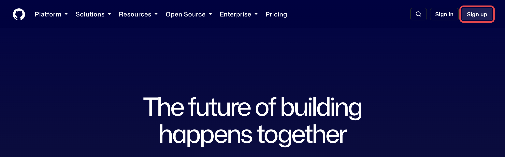

GitとGitHubをつなぐ¶
この章のゴール
GitHubアカウント を作り、PCに Git を入れて、 VSCodeから「自分のGitHub」とやりとりできる状態になること。 あわせて、安全に使うための初期設定（2段階認証）まで済ませます。

全体の流れ¶
所要時間はだいたい 15〜20分 です。
flowchart LR
A([スタート]) --> B[1. GitHubアカウントを作る]
B --> C[2. プロフィールの初期設定]
C --> D[3. 2段階認証]
D --> E[4. Gitを入れる]
E --> F[5. VSCodeとGitHubをつなぐ]
F --> G([準備完了 🎉])むずかしいところは Claude に頼める
前のページで Claude を入れたので、4以降の作業は 「Gitを入れて」「GitHubにログインできるようにして」と頼めば代わりに進めてくれます。
はじめに：会社のルールを確認
会社で使う場合は、会社のメールアドレスで登録するか、社内ルールに従ってください。 すでに「このメールアドレスで作って」と案内されている場合は、それに従いましょう。
1. GitHubアカウントを作る¶
ブラウザ（Chrome や Edge）で https://github.com を開きます。
flowchart TD
A[github.com を開く] --> B["右上の Sign up を押す"]
B --> C[メールアドレスを入力]
C --> D[パスワードを入力]
D --> E[ユーザー名を入力]
E --> F["案内に従ってクイズ／確認に答える"]
F --> G[Create account を押す]操作の対応表です。英語のボタンが多いので、迷ったらここを見てください。
| 画面の表示（英語） | 意味・やること |
|---|---|
| Sign up | 新規登録（アカウントを作る） |
| Enter your email | メールアドレスを入力 |
| Create a password | パスワードを作る |
| Enter a username | ユーザー名（半角英数字）を決める |
| Continue / Create account | 次へ進む／登録を確定する |

個人情報の取り扱いに注意
- 登録に使うメールアドレスやパスワードは、この資料や社内チャットに貼り付けないでください。
- パスワードは他サービスと使い回さないでください。
ユーザー名の決め方（クリックで開く）
結論：会社で使うユーザー名は、自分で好きに決めず「社内で決められたルール」に従います。
理由： 名前の付け方をそろえておくと、GitHub上の一覧を見たときに 「社内の誰か」がすぐ分かり、レビュー依頼や権限付与のときに取り違えません。
具体的には、こう進めてください。
- 社内の命名ルールを確認する（管理者や先輩に「GitHubのユーザー名の決まりはありますか？」と聞くのがいちばん早いです）
- そのルールに沿った名前を考える
- GitHubの登録画面で入力する
GitHub側の制約（ルールを考えるときの前提）
- 使えるのは 半角の英数字とハイフン だけです。
.（ドット）や_（アンダースコア）は使えません。 - 世界でひとつだけの名前です。すでに使われている場合は、社内ルールの形を保ったまま調整してください。
会社用と個人用のアカウントは分ける
すでに個人のGitHubアカウントを持っていても、業務では会社用のアカウントを新しく作って使います。 個人アカウントに会社のメールを追加して兼用する、という使い方はしないでください。 （退職・異動時の整理や、うっかり個人リポジトリへ業務ファイルを置いてしまう事故を防ぐためです。）
後から変更はできますが……
ユーザー名は後から変更できますが、URLが変わって既存のリンクが切れます。 最初に社内ルールを確認して決めておきましょう。
メール認証をする¶
登録したメールアドレスに、GitHubから確認コード（数字）が届きます。
flowchart LR
A[メールを開く] --> B[確認コードを確認<br/>例：8桁の数字]
B --> C[GitHubの画面に入力]
C --> D([認証完了 ✅])コードが届かないときは
- 迷惑メールフォルダを確認してください。
- 数分待っても届かなければ、画面の Resend（再送） を押します。
- メールアドレスの打ち間違いがないか、もう一度確認しましょう。
2. プロフィールの初期設定¶
ログインできたら、最低限のプロフィールを整えます。あとからでも変更できるので、まずは軽くでOKです。
- 表示名（Name）：社内で誰か分かる名前にしておくと、共同作業のときに便利です。
- アイコン（Profile picture）：顔写真でなくてもOK。設定すると見分けがつきやすくなります。
設定場所への行き方：
flowchart LR
A[右上のアイコンを押す] --> B["Settings（設定）を押す"]
B --> C["Public profile で<br/>名前・アイコンを編集"]
C --> D["Update profile で保存"]3. 安全のための設定（2段階認証）¶
ここは必ず設定しましょう
GitHubは大切なファイルを置く場所です。2段階認証（2FA） を設定すると、 万一パスワードが漏れても、本人以外はログインできなくなります。
2段階認証は、ログイン時に「パスワード」＋「スマホアプリの数字」の2つを使う仕組みです。
flowchart LR
P[パスワード] --> L{ログイン}
S[スマホの認証アプリ<br/>の6桁コード] --> L
L --> OK([本人だけ入れる 🔒])設定の入り口：Settings → Password and authentication → Two-factor authentication から進めます。 画面の案内に従って、スマホの認証アプリ（例：Google Authenticator など）と連携します。
リカバリーコードは必ず保管
2段階認証を設定すると、リカバリーコード（緊急用の合言葉）が表示されます。 スマホを失くしたときの命綱なので、安全な場所に保管してください。社内チャット等には貼らないこと。
4. Git（ギット）を入れる¶
Gitは、変更の履歴を管理する“仕組み”そのものです（→ 用語集）。GitHubを使うPCに必要です。
VSCodeのClaudeに、こう頼むだけでOKです。
このPCにGitが入っているか確認して、入っていなければ入れて。
お使いのPCに合った方法で、確認から導入まで進めてくれます。
- https://git-scm.com/download/win を開く
- 自動でダウンロードが始まる（始まらなければ案内のリンクを押す）
- ファイルを開き、画面の案内は 基本そのまま「Next」 で進めてOK
- 「Install」→「Finish」で完了
Macは最初からGitが入っていることが多いです。まず確認します。
- VSCodeを開く → メニューの「ターミナル」→「新しいターミナル」
-
次の1行を貼り付けて Enter
git --version -
git version 2.xx.xのように出れば、すでに入っています - 入っていない場合は、案内ウィンドウが出るので 「インストール」 を押す
確認だけなら覚えなくてOK
git --version は「入っているか確かめる」ためのものです。意味を覚える必要はありません。
5. VSCodeとGitHubをつなぐ¶
VSCodeと、この章で作った GitHubアカウント をつなぎます。
ここは「今すぐやる作業」ではありません
結論：先にサインインしておく必要はありません。 VSCodeは、GitHubとやりとりする操作を初めてしたときに、自動で「つないでいいですか？」と聞いてきます。 そのときに許可すればつながるので、この節は「そういう画面が出る」と知っておくだけでOK です。
つながるのは、たとえば次のような操作をしたときです（どれも次の章以降で出てきます）。
- ソース管理パネルの 「GitHubに発行（Publish to GitHub）」 を押したとき
- 初めて プッシュ（同期） したとき
そのときの流れ：
flowchart LR
A[GitHubとやりとりする<br/>操作をする] --> B["VSCodeが<br/>許可を求める"]
B --> C[ブラウザが開く<br/>→ Authorize を押す]
C --> D([接続完了 ✅])- VSCodeに「GitHubにサインインしますか」といった確認が出るので 許可（Allow / Sign in） を押す
- ブラウザが開いてGitHubの画面になるので、ログインして Authorize（許可） を押す
- 「VSCodeに戻ってよいか」と聞かれたら、戻る（Open Visual Studio Code）
これで完了です。つながったあとは、VSCode左下の アカウントアイコン に自分のGitHubアカウント名が表示されるようになります（つなぐ前は表示されません）。
先につないでおきたい人は
「本番で迷いたくないので、今つないでおきたい」という場合は、
次の 6. GitHub CLI（gh） の gh auth login を済ませておくのがいちばん確実です。
Claudeに 「GitHubにログインできるようにして」 と頼んでもOKです。
6. GitHub CLI（gh）を入れる（GitHub操作におすすめ）¶
GitHub CLI（gh）は、GitHubの操作（リポジトリ作成・プルリク作成 など）を行うための道具です。
実は「Claudeに頼む」ときも使われます
Claudeにリポジトリ作成やプルリク作成を頼むと、Claudeは 内部でこの gh コマンドを使います。
そのため、Claudeで進める人も gh を入れておくとスムーズです（未導入だと、これらの操作でつまずくことがあります）。
- コミット・プッシュ だけなら
git（前の手順で導入済み）でOK ―ghは不要です - リポジトリ作成・プルリク作成 など“GitHub側”の操作で
ghが活躍します - GitHubサイト（ブラウザ）だけ で操作するなら、
ghがなくても大丈夫です
いちばん簡単：Claudeに頼む¶
VSCodeのClaudeに、こう頼むだけでOKです。
GitHub CLI（gh）を入れて、GitHubにログインできるようにして。
Claudeが、お使いのPCに合った方法でインストールから初期設定（ログイン）まで進めてくれます。 （Homebrewなどの準備が必要な場合も、まとめてやってくれます。）
自分で入れる場合¶
入れたら、GitHubと接続（ログイン）します。
gh auth login
画面の質問に ↑↓ と Enter で答えていきます（迷ったら GitHub.com → HTTPS → ブラウザで認証、の順で選べばOK）。
入っているか確認
gh --version でバージョンが表示されれば準備完了です。
入れ方に迷ったら、Claudeに「gh を使えるようにして」と頼むこともできます。
この章のまとめ¶
flowchart LR
A[VSCode] --> B[Claude]
B --> C[GitHubアカウント]
C --> D[Git]
D --> E[GitHub CLI]
E --> F([準備完了 🎉])- GitHubにログインできる
- プロフィールを設定した
- 2段階認証で安全にした
- PCにGitを入れた
- GitHub CLI（
gh）を入れた - VSCodeとGitHubのつなぎ方が分かった（実際につながるのは次章から）